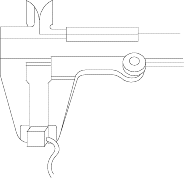
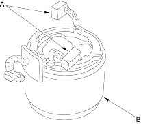
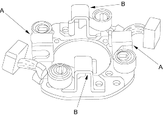
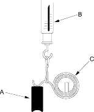

- Measure the brush length. If it is not within the service limit, replace the armature housing assembly.
Brush Length
Standard (New):
M/T:14.0 - 14.5 mm (0.55 - 0.58 in.)
A/T:15.8 - 16.2 mm (0.62 - 0.64 in.)
Standard (New):
M/T:9.0 mm (0.35 in.)
A/T:11.0 mm (0.43 in.)

Starter Field Winding Test (M/T)
- Check for continuity between the brushes (A). If there is no continuity, replace the armature housing (B).

- Check for continuity between each brush (A) and the armature housing (B). If there is continuity, replace the armature housing.
Starter Brush Holder Test
- Check that there is no continuity between the (+) brush holder (A) and (-) brush holder (B). If there is no continuity, replace the brush holder assembly.

- Insert the brush (A) into the brush holder and bring the brush into contact with the commutator, then attach a spring scale (B) to the spring (C). Measure the spring tension at the moment the spring lifts off the brush.
Spring Tension:
13.7 - 17.7 N (1.4 - 1.8 kgf, 3.07 - 3.97 lbf)
